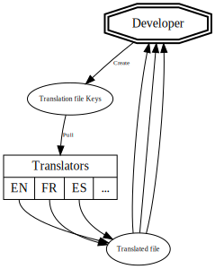

Translating a monolingual application
💕 AFUP - February, 2020 💕
👋 Hi, I'm Olivier Dolbeau
Translating a monolingual application
💕 AFUP - February, 2020 💕
g11n > i18n > l10n > t8n
- Globalization
- Internationalization
- Localization
- Translation
There all numeronyms.
I hope you learned something today! 🎉
Globalization
The term Globalization(g11n) comes into play when a company wants to expand their market outside of their locale place and move into a global market.Globalization is simply the umbrella term used to describe the process of bringing i18n and l10n into your product.
Vivek Madurai
Internationalization
To put it in simple words Internationalization is a process of designing and developing a product so that it can be easily localized for various target markets without any engineering dependency. For example, taking decision on encoding characters stored in your database in Unicode like utf-8 instead of latin-1, moving messages to resources files, handling timestamps across timezones
Vivek Madurai
Localization
The term Localization refers to the adoption of a product to a specific language or culture(country/region). Localizing a product includes language translation, number formatting, date formats, currency, look and feel etc.
Vivek Madurai
Translation
translate('a_beer_please', 'en'); // A beer please
translate('a_beer_please', 'fr'); // Une bière s'il vous plaît
translate('a_beer_please', 'ar'); // بيرة لو سمØت
translate('a_beer_please', 'ta'); // தயவுசெய்து ஒரு பீர்
💪 Looks simple!

😥 But it's not...
😠Problem #1
Variables translations
Plural?
if (0 === $beers) {
translate('no_beer', 'fr'); // Je n'ai pas bu de bière
} elseif (1 === $beers) {
translate('one_beer', 'fr'); // J'ai bu une bière
} else {
translate('more_beer', 'fr'); // J'ai bu plusieurs bières
}
Gender?
if ('female' === $gender) {
translate('women_drink', 'fr'); // C'est une grosse buveuse.
} elseif ('male' === $gender) {
translate('men_drink', 'fr'); // C'est un gros buveur.
}
Combined?
if ('female' === $gender) {
if (0 === $beers) {
translate('women_no_beer', 'fr'); // Elle n'a pas bu de bière
} elseif (1 === $beers) {
translate('women_one_beer', 'fr'); // Elle a bu une bière
} else {
translate('women_more_beer', 'fr'); // Elle a bu plusieurs bières
}
} elseif ('male' === $gender) {
if (0 === $beers) {
translate('men_no_beer', 'fr'); // Il n'a pas bu de bière
} elseif (1 === $beers) {
translate('men_one_beer', 'fr'); // Il a bu une bière
} else {
translate('men_more_beer', 'fr'); // Il a bu plusieurs bières
}
}
☺️ Solution
ICU Message format
Most simple example
translate('drink_beer', [
'name' => 'Michèle',
]);
{name} boit de la bière.
Plural example
translate('drink_beer', [
'beers' => 5,
]);
{beers, plural,
=0 {Je n'ai pas bu de bière.}
one {J'ai bu une bière.}
other {J'ai bu # bières !}
}
Gender example
translate('drink_beer', [
'gender' => 'female',
]);
{gender, select,
female {Tu es une grosse buveuse!}
male {Tu es un gros buveur!}
other {Tu bois beaucoup!}
}
Combining variables
translate('drink_a_lot', [
'firstname' => 'Michèle',
'gender' => 'female',
'count' => 5,
]);
ICU hell! 🤘
{gender, select,
female {
{count, plural,
=0 {{firstname} ne boit pas.}
=1 {{firstname} n'est pas une grosse buveuse, elle n'a bu qu'une seule bière.}
other {{firstname} est une grosse buveuse, elle a bu {count} bières!}}}
male {
{count, plural,
=0 {{firstname} ne boit pas.}
=1 {{firstname} n'est pas un gros buveur, il n'a bu qu'une seule bière.}
other {{firstname} est un gros buveur, il a bu {count} bières!}}}
other {
{count, plural,
=0 {{firstname} ne boit pas.}
one {{firstname} a bu une seule bière.}
other {{firstname} a bu {count} bières!}}}}
More examples: https://symfony.com/doc/current/translation/message_format.html Online editor: https://format-message.github.io/icu-message-format-for-translators/editor.html
💡 Tip: Use a translation key!
https://symfony.com/doc/current/best_practices.html#use-keys-for-translations-instead-of-content-stringshttps://php-translation.readthedocs.io/en/latest/best-practice/index.html
😠Problem #2
The file based worflow
📜 File based workflow
- Developers create a translation file.
- This file is sent to translators.
- Translators send back a translated file.
- Developers integrate this file in application.
- 🔠REPEAT ğŸ”
Workflow - 2 locales
Workflow - 3 locales
Workflow - 4 locales
Workflow - 5 locales
💥 It's like super heroes movies

😠Far from perfect
- Time consuming for developer
- Complicated workflow
- Hard to deal with diff.
☺️ Solution
Use a SAAS product
Lot of solution exists
- Loco (https://localise.biz/)
- PhraseApp
- Transifex
- ...
- (please don't reinvent the wheel)
Our new workflow
It solves our problems (& even more)
- 👌 Developer only have to push keys, nothing else.
- 😀 Translators now have a dedicated tool.
- 💾 SAAS product = primary data store
- 📜 You have access to the whole history! \o/
- 🔠You can add context to translations \o/
- ⬇️ Automatically retrieve translations during deploy
⌨️ Code please.

Symfony component FTW!
composer require symfony/translation
use Symfony\Component\Translation\Translator;
$translator = new Translator('fr_FR');
$translator->addResource('array', [
'a_beer_please' => 'Une bière s\'il vous plaît',
], 'fr_FR');
echo $translator->trans('a_beer_please');
// « Une bière s'il vous plaît »
Lot of loaders
symfony/translation
- Supports variables
- Supports ICU
- Supports Fallback
- Supports catalogs
- Provide basic extract feature
We're missing something
How to sync translations with a SAAS solution?
php-translation FTW
- 💕 A github organisation dedicated to translations
- 🔠Allow to sync translations with SAAS solutions
- ⬇️ Provide advanced extract feature
Doc: https://php-translation.readthedocs.io/en/latest/
💕 Even better with Symfony
💕 Profiler integration
💕 Symfony commands
& much more! 💕
- ✍️ Edit in place
- 👀 Web UI
- 🩠Auto translate

Translating a monolingual application
💕 AFUP - February, 2020 💕
Crazy idea!

🙋 Who work on a monolingual app?
🙋 Without translations?
"Can you change the translation in the footer please?"
"There's a typo in the subscription funnel, could you correct it?"
git commit -m 'Correct typo translation'
git push origin fix-typo
- ➕ Create a PR
- ⏲️ Wait for tests
- ⏲️ Wait for review
- ⏲️ Merge your PR
- 🉠Deploy
And sometimes, there is an issue to deal with...

Set up a translation workflow!
- 🉠Devs are not blockers / bored anymore.
- 🉠It's easier / quicker for anyone to update translations.
- 🉠It's a first step done for G11N.
Use translations!